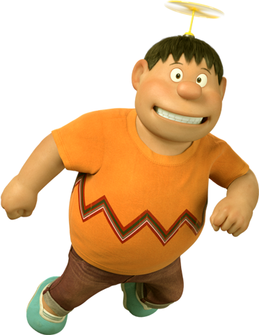
- Name: Takeshi "Gian" Gouda
- Age: 10
- Birht Date: 15 June, 1961
- Height: 157 cm
- Skin Colour: Tan/Brown
- Eye Colour: Black
- Favorite Colour: Orange
- Parents: Mr.Gouda, Mrs.Gouda
Takeshi Gouda, more commonly known by
his nickname Gian is a main character in the Doraemon franchise. He is
the main
antagonist for the most Manga chapters and anime episodes, while in other cases, he is
the supporting protagonist.
Gian is recognized by his large build (might partly be contributed by obesity) as well
as his mean and aggressive behavior. He "rules" the neighborhood with force, often to
the physical expense of other children, especially Nobita, who often resorts to asking
Doraemon for gadgets to get even on him. He appears to be just as depending on Nobita as
Nobita is to Doraemon as he constantly tells him what to do despite Nobita's protests.
In addition, he has a tendency to steal or rob others, usually Suneo, who offers himself
to be Gian's sidekick on most occasions.
Appearance
Gian has realistic black hair and his black eyes are not like dots. He wears an orange t-shirt and navy blue trousers.
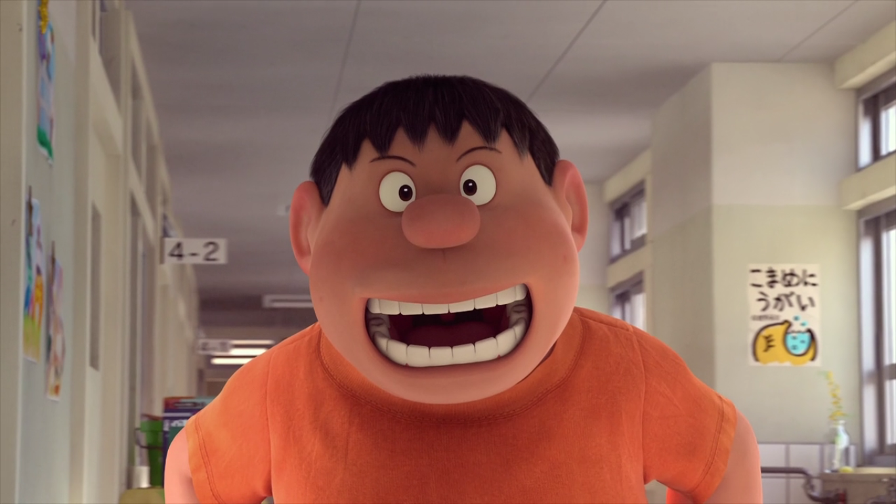
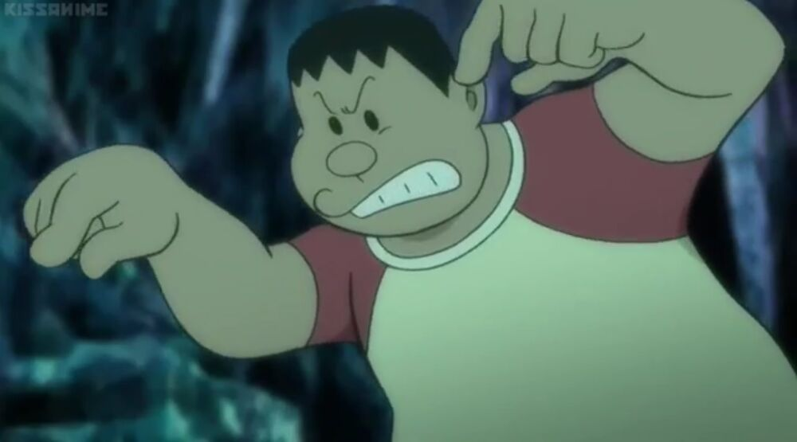
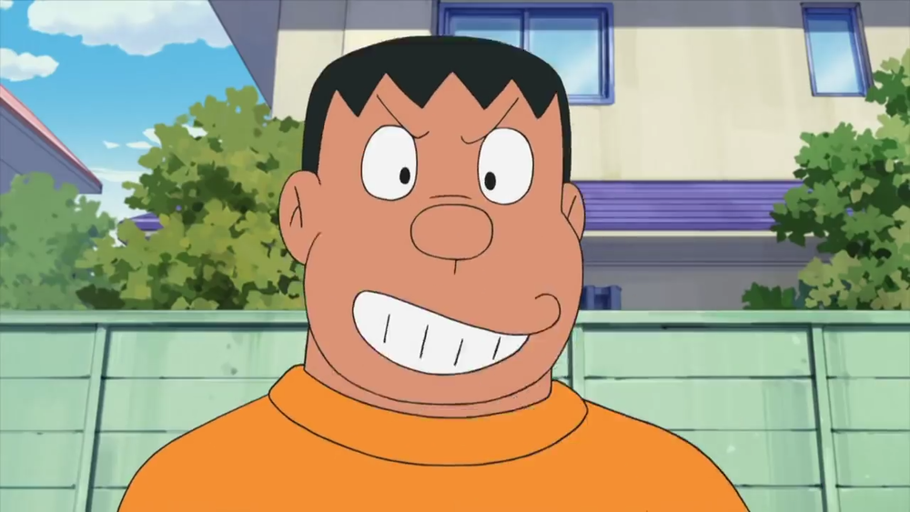
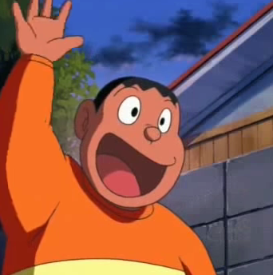
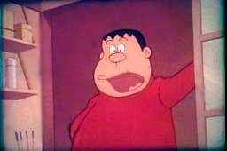
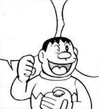
Personality and Characteristics
Gian is known for his overconfidence in his terrible singing and cooking skills, of which he constantly abuses to torture his surroundings, as he was never aware of these flaws.
Gian's favorite food is stuffed capsicum.
Being a bully, he often steals or robs toys and manga under the pretext of "borrowing" them, unless the target is damaged. Save for a select few episodes and films in general, Gian is usually the main antagonist, but occasionally allies himself with other characters as well and is willing to help, if possible.
Several of the stories revolve around Nobita and his friends' efforts to avoid Gian & his allies, while several chapters summarize his friends' efforts to avoid visiting Gian's house on his birthday because of his selfish nature. After reflecting on one event about his birthday, Gian thought of himself why he wasn't popular among his peers. After getting a lecture from Doraemon to see what an unruly character he is, Gian realizes that he should have been a better person and he begs Doraemon to give him another chance. However, things didn't go exactly as planned when Suneo mocked him about how weird he was acting, and he got kicked by Suneo after attempting to become less malevolent towards his peers. This led him to lose control of his temper and start attacking his friends again.
Despite his appearance and behavior that terrifies anything without external aid, his mother, the owner of a local grocery store, dominates him, a fact often utilized by Nobita and Doraemon to play them off against each other. He founded his own baseball team named after himself. Although Nobita is often blamed for the losses against the baseball team's rival, the "Tyranos", Gian always forces Nobita to play because they do not have enough players or simply because he doesn't care how terrible Nobita is at sports and just wants to beat him up.
Gian is physically the strongest and probably the most athletically talented among the kids, and he's also the captain of the local baseball team — The Giants. Because of the poor skills of some members like Suneo or, more significantly, Nobita, the team often finds itself at the bottom of the league table. Defeats often lead to Gian's abuse of his teammates due to believing that winning is everything to him.
He loves stealing comics and toys from other children and even stealing Doraemon's gadgets from Nobita. Generally he misuses them.
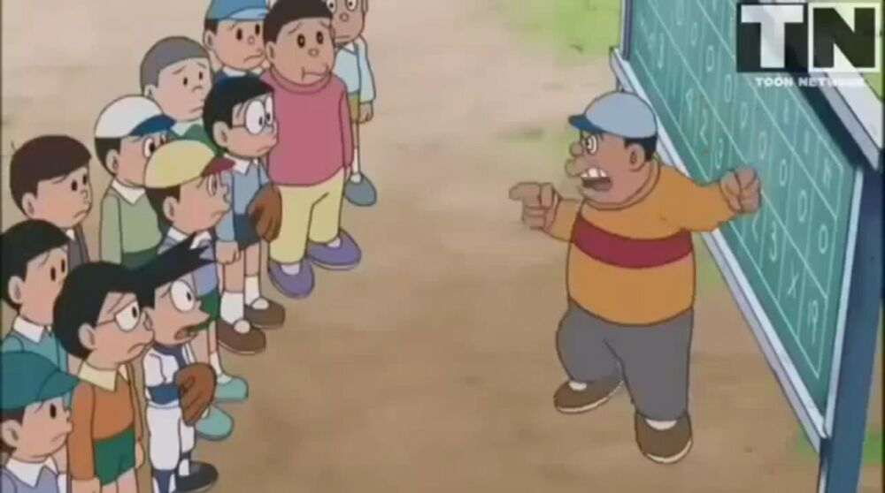
Gian is a gamer, but doesn't go in the competition between Nobita and Suneo.
He can also be quite cruel to animals, such as the time he and Suneo tried to capture a little rabbit that Nobita, Doraemon and Shizuka saw and care about. And he and Suneo even once caught two tanukis with the net bazooka and planned on doing something cruel to them until Doraemon stopped Gian and Suneo with the Leopard Cat Glasses and Tail and hypnotized them into thinking they are dancing tanukis while freeing the real ones.
Family
Gian's mother is often seen to be angry at him. Whenever she catches Gian shirking off his responsibilities of watching over the store and/or bullying innocent children, including Nobita, she would severely and physically punish Gian for his wrongdoings and misdemeanors. His mother is basically the only person that Gian is genuinely terrified of. Even hearing her voice would be enough to scare him and make him run away in cowardice.
Apart from his father and mother (whom he fears the most), Gian also has a younger sister called Jaiko. He is extremely protective of Jaiko, sometimes to her annoyance. Jaiko has an interest in writing comic books, so Gian helps her using Doraemon's gadgets, which frustrates her sometimes. Also, no matter what Nobita says about Jaiko like how he either likes or dislikes her, Gian would beat up Nobita anyway. Sometimes, however, she is grateful for the help that Gian lends from Doraemon.
Relationships
Suneo Honekawa
"Of course I'll let you see my homework! We're good friends, right?"
— Suneo to Gian after Gian asked if he could see his homework in Nobita's Dinosaur
Gian and Suneo are shown to be really good friends (or possibly being best friends), but occasionally Gian will beat him up and Suneo sometimes complains that he dislikes Gian. In one episode Suneo commented that Gian thinks that Suneo and Nobita are objects to hit, not friends. That remark left Doraemon laughing but Nobita seemed to agree to that. But Gian is often seen with Suneo and they are actually very good friends. Sometimes Gian comes to Suneo's house to study but ends up eating all his food. Suneo acts like a sidekick for Gian and a messenger for him. Although at some times, whenever Suneo gets his hands on Doraemon's gadgets, he would simply turn against Gian, and get back at him.
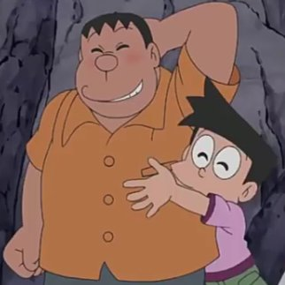
Doraemon
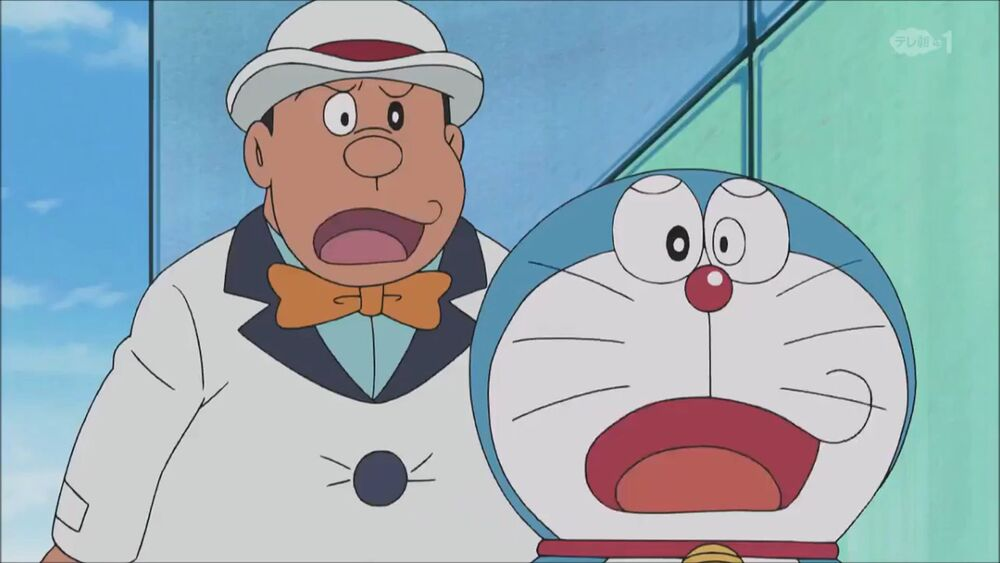
Doraemon and Gian's relationship is good as he has helped Gian in numerous episodes. Doraemon has felt sympathy and compassion for him as seen in some movies and episodes. However, Doraemon reacts negatively to Gian's aggression with either terror or disgust.
Nobita Nobi
"Nobita, I actually really want to be friends but I wouldn't admit it..."
— Gian's true feelings about Nobita in Truthful Robot
While typically a sadistic bully, especially to Nobita, their relationship is good as sometimes they gang up on Suneo, and (though slightly forceful) Nobita tries to help Gian if possible. Often times he gets beaten up by Gian. It is unknown why Gian started picking on Nobita before Doraemon came to the 20th/21st century. Also, Nobita is the only one who is brave enough to insult and tease Gian and yet too craven to get beaten up by Gian.
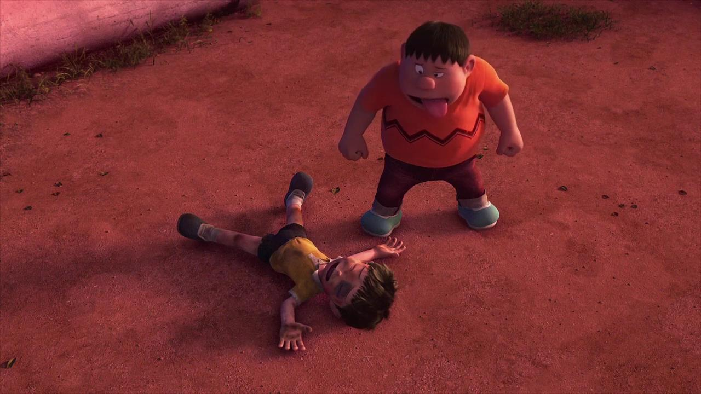
Gian often enjoys beating up and/or insulting Nobita, he even said: "If I don't bully Nobita a day, I can't eat and sleep any more." Although what he said could be an excuse for wanting to beat up Nobita for no reason at all or simply because he loves him too much that he takes the pure joy out of making Nobita's life as miserable as possible, destroying his self-esteem, and making him bawl like a baby nonstop. In fact, he'd stop at nothing until Nobita is violently wounded by him believing that Nobita must be punished for every stupid thing he says and/or does to him, including mocking him, being blunt and ruining his good day accidentally or purposely, losing the game due to his extremely atrocious skills, and for no reason at all. It is unknown why Gian always intimidates Nobita despite the fact that Nobita never once did anything bad to Gian once in his life before Doraemon first came to the present time period. Sometimes whenever he gets his hands on Doraemon's gadgets, Gian would use it to get back at Nobita as well as enslaving him throughout the rest of the day believing it is the only way to teach Nobita a lesson or simply because he loves to be very close to him and torture him to no end. He doesn't even care at all if Nobita has different plans of his own, such as studying or spending the day with Shizuka. In fact, Gian is incapable of ignoring Nobita in every way possible or letting him go over a simple request by Nobita. Gian appears to be extremely dependent on Nobita and constantly forces him to do whatever needs to be done or whatever he wants and gives him impossible tasks. Just seeing him would be enough to easily catch his attention. However, in the episode Truthful Robot, both Nobita's robot and Gian's robot would rather be friends than enemies. Gian is usually the first one to support Nobita's decisions in the movies. They are also shown to be very close to each other, in the movie Nobita's South Sea Adventure, when Nobita falls into the sea, Gian holds his hand and tells him not to let go also in some other episodes he helps Nobita, as in one episode, Nobita gets sick, and Gian helps him off the ground. It is also shown in The Day Doraemon is Reborn when Gian rescued Nobita from plummeting to his death. He even cares for Nobita enough to save Doraemon when the earless blue robot cat got infected with a nearly-fatal virus. Gian even once offered the severely-sick Nobita some medicine. Some of these good things prove that Gian isn't completely heartless towards Nobita.
Shizuka Minamoto
Shizuka and Gian are friends, but Shizuka gets worried when Gian invites her to taste his food and his music concerts along with her other friends. Shizuka also hates Gian's aggression, but their relationship is good otherwise. Gian does stop his behavior when scolded by her on some occasions. In one episode, he realized that Shizuka had used a gadget from Doraemon to try to make him stop bullying, even going as far to hit her, but she used the gadget to fling him up into a tree. Their relationship isn't too bad otherwise.

Muku

Muku is the only pet that Gian has. Generally, Gian rarely walks and feeds him, while his younger sister Jaiko does the work of taking care of him. Although Gian does not openly express his care or love for him, Gian has shown love to Muku many times and proved that he does care for the dog, even though he considers him stupid and skittish.
Gallery
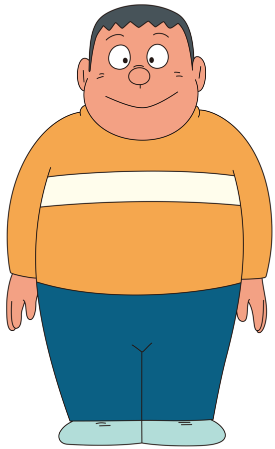
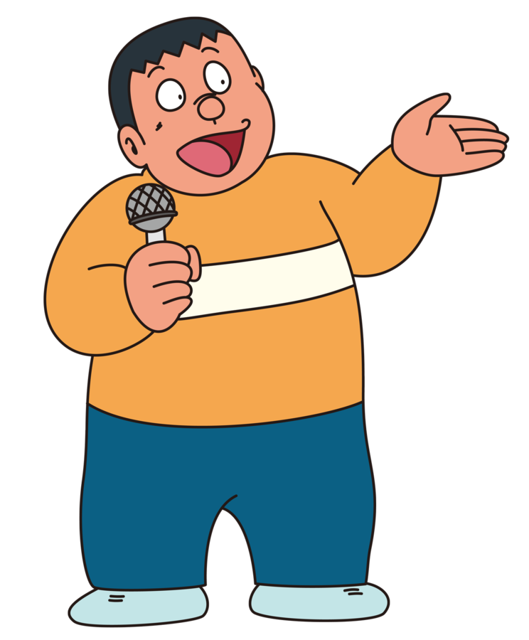
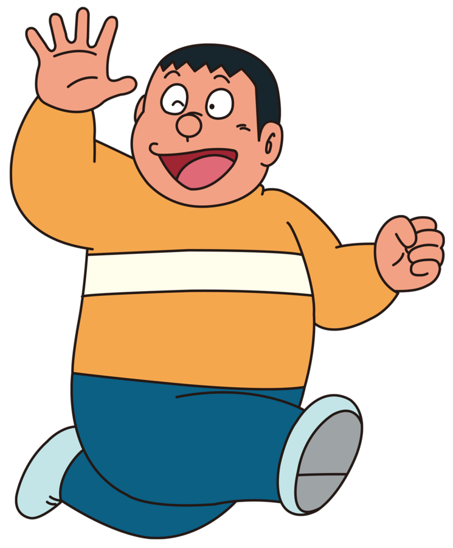
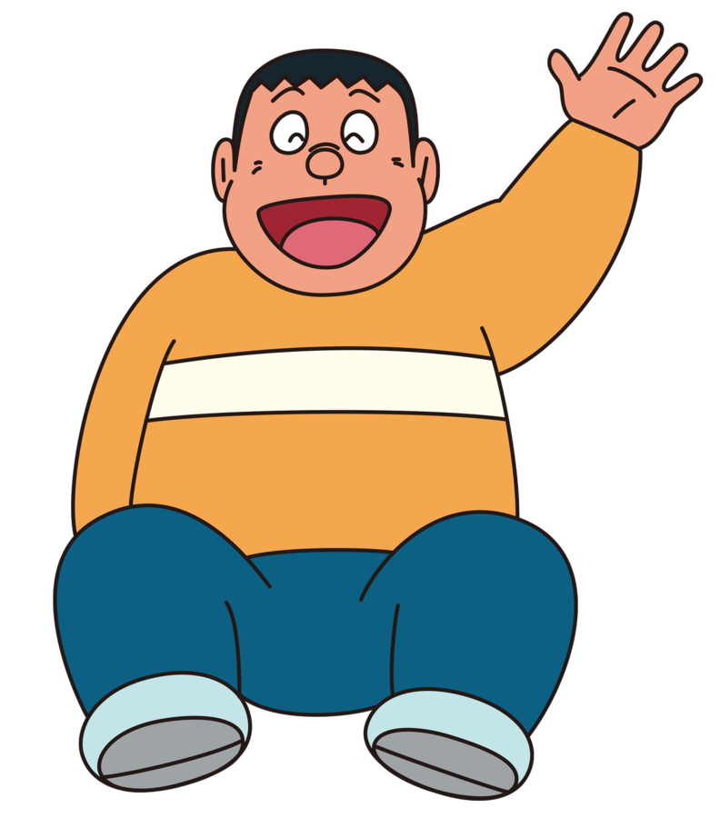
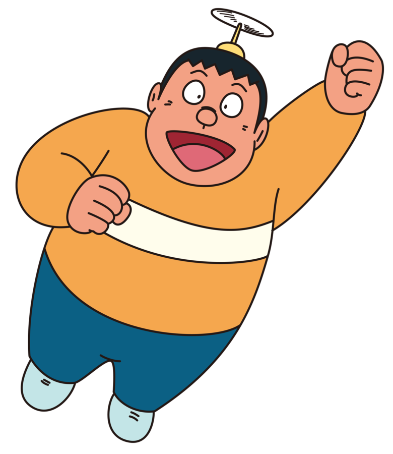
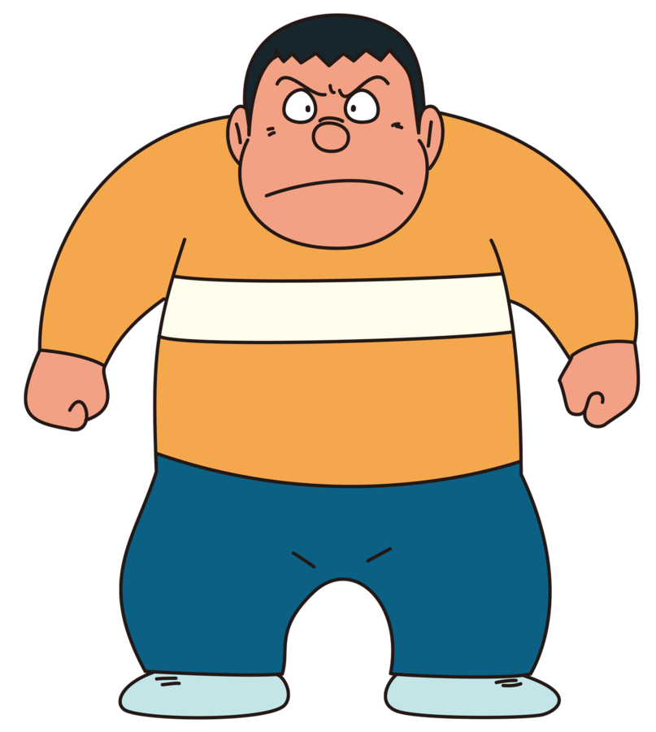